Guías
Ayuda paso a paso para armar la cama, formar el montículo, entender las fechas de helada y mantener viva la temporada. Cada afirmación con calificación de evidencia enlaza a su evidencia.

Preguntas que esta biblioteca todavía no puede responder › Los vacíos de todas las guías, en un solo lugar.
De tu huerto
Una guía por cada planta que planificaste aquí, en este dispositivo. No se envía nada a ningún lado.
Empieza aquí · 6
- Entiende tus fechas de helada Tus fechas de última y primera helada son el reloj con el que funciona todo el huerto. Qué significan, por qué son una probabilidad y cómo deciden cuándo puede salir cada cultivo.
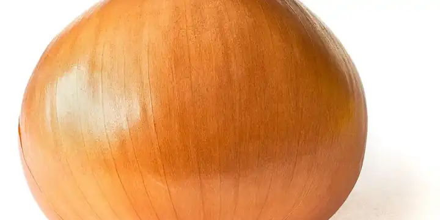
Fechas de helada, zonas de rusticidad y duración del día Tres números distintos describen tu clima, y hacen tres trabajos distintos. Tu zona, tus fechas de helada y tu latitud responden cada una su propia pregunta. La mayoría de las herramientas de huerto las mezclan en "tu zona", y eso es un error. Aquí te decimos cuál es cuál.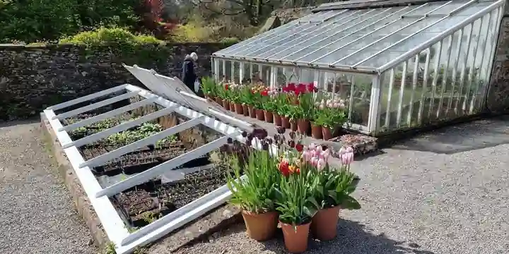
Cómo leer un calendario de siembra Una tabla de siembra que dice "siembra en abril" está mal para la mayor parte del país. Lo que vale la pena aprender es leer cualquier calendario como un margen desde tus propias fechas de helada. Aquí te explicamos cómo, en los dos extremos de la temporada.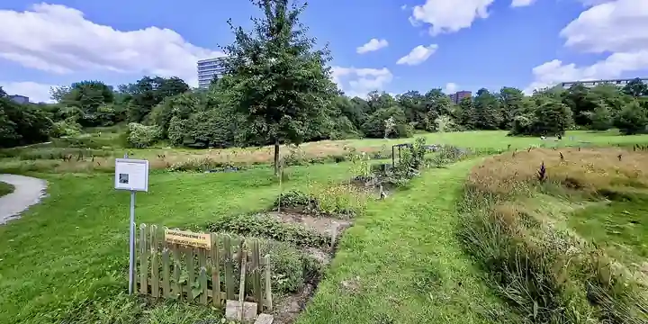
Dónde poner el huerto: sol, agua y drenaje La decisión más importante que tomas es dónde va el huerto, y la tomas antes de plantar nada. Cuánto sol necesitan las hortalizas, por qué el agua estancada lo descarta y cómo el lugar le da forma al plan.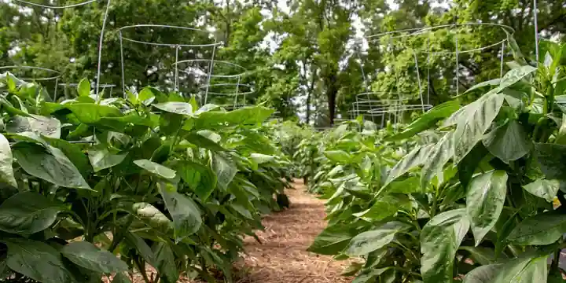
Cómo elegir entre un campo, una cama en el suelo, una cama elevada o una maceta Las cuatro formas de contener un huerto, lo que cuesta y lo que te da cada una, y cómo elegir la que va con tu patio, tu suelo y el trabajo que quieres hacer.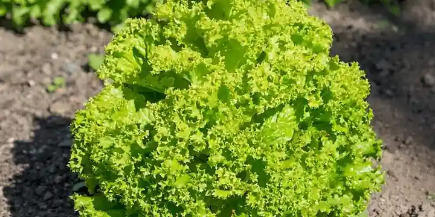
Planta tu primera cama, paso a paso Una guía para tu primera temporada. Elige unos cuantos cultivos que perdonan errores, cuenta desde tus fechas de helada, adelanta lo que necesita ventaja, aclimátalo y ponlo en la tierra en el momento justo.
Conoce tu terreno · 10
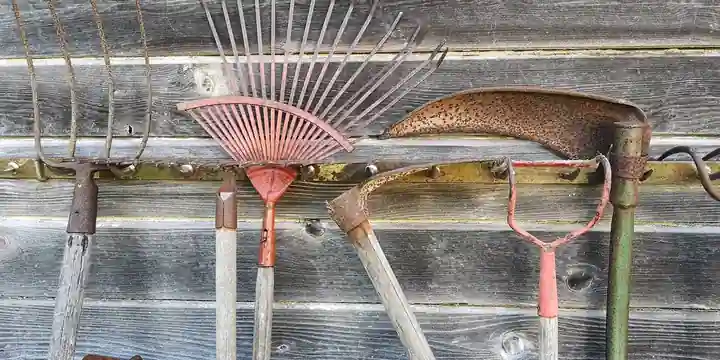
Cómo construir una cama elevada Qué tan ancha, qué tan larga, qué tan honda y de qué hacerla. El ancho es la única medida que importa, el resto lo decides tú, y aquí te explicamos cómo llenarla sin tirar el dinero.- Huerto en macetas para principiantes Puedes cultivar comida de verdad en macetas en un patio, un balcón o un escalón. Cómo elegir la maceta, con qué llenarla, qué sembrar y el hábito que decide si vive o no.
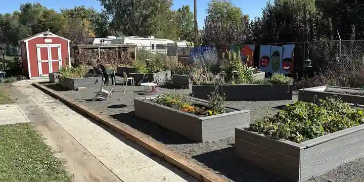
Qué hacer con la tierra de tu cama elevada del año pasado La tierra de tu cama elevada no se agota al terminar la temporada. Por qué se asienta, cómo renovarla con composta y por qué cambiarla casi nunca es la respuesta.
+7 másMostrar menos
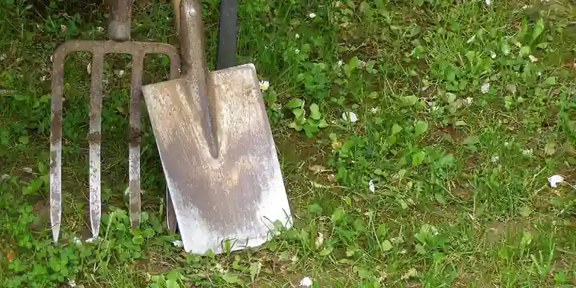
El análisis de suelo, la mejor compra del huerto Un análisis de suelo cambia las adivinanzas por datos. Qué mide, por qué ninguna herramienta debería darte cifras de fertilizante sin uno y cómo tomarlo. Es ese raro consejo de huerto que te ahorra dinero.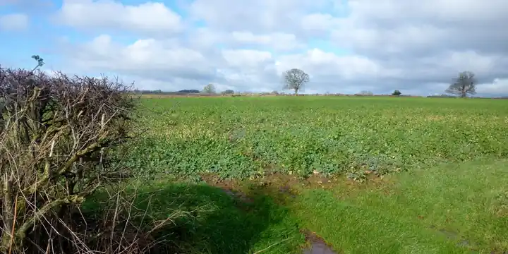
Cultivos de cobertura y abono verde para el huerto de casa Un cultivo de cobertura es una planta que cultivas para alimentar el suelo. Qué hacen, cuál fija nitrógeno y cuál solo aporta materia orgánica, y cómo meter uno en la temporada libre de un huerto pequeño.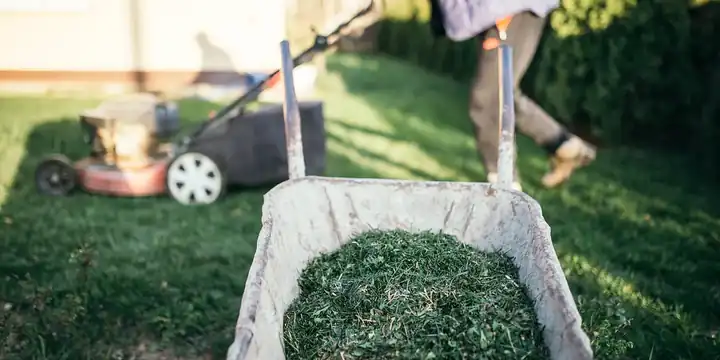
¿Hay que rotar los cultivos en una cama elevada? Sí. Las plagas y las enfermedades viven en el suelo, así que una cama elevada necesita rotación como cualquier terreno. Aquí está por qué, y por qué sacar la tierra es la forma cara de hacer lo mismo.- Rotación de cultivos para el huerto de casa Mueve los cultivos por familia de plantas para que las plagas y enfermedades del suelo no se asienten. Qué rotar, cada cuánto y qué puede y qué no puede hacer la rotación.
- No plantes bayas donde estaban los tomates: la regla de rotación que la rotación pasa por alto Puedes rotar a la perfección, esperar tres años, limpiar los restos y aun así matar un cuadro de frambuesas. Verticillium no hace caso de las familias de plantas y se queda en el suelo durante años.
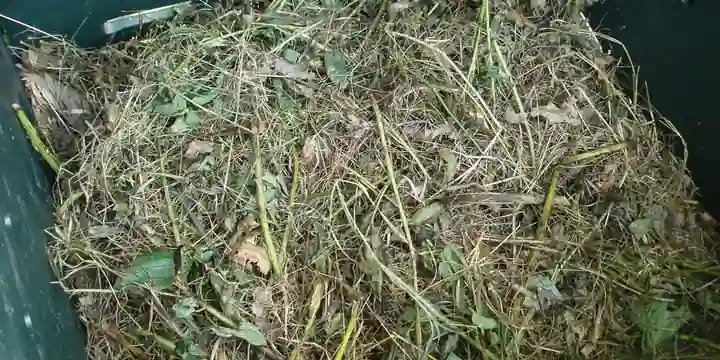
Cómo hacer composta en pilas calientes y pilas frías Cómo hacer una composta que sí termine: qué entra, pila caliente contra pila fría, qué mitos saltarte y el único riesgo de contaminación que hay que tomar en serio.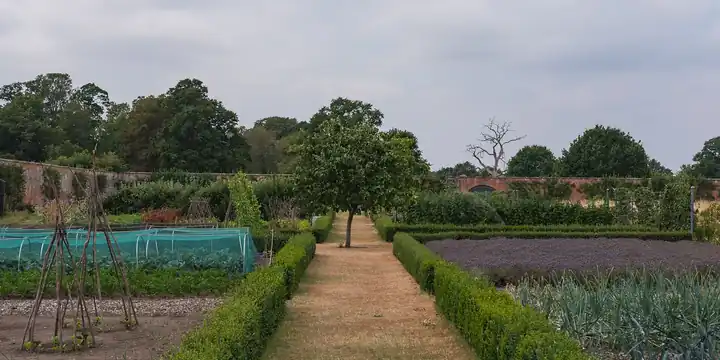
Cómo controlar las malezas, y el folclore sobre malezas que no funciona Dos hábitos le ganan a todo: no dejes nunca que una maleza suelte semilla y mantén el suelo cubierto. Las capas de acolchado, el azadón superficial, el mito del vinagre y las malezas que plantas tú.
Qué cultivar · 20
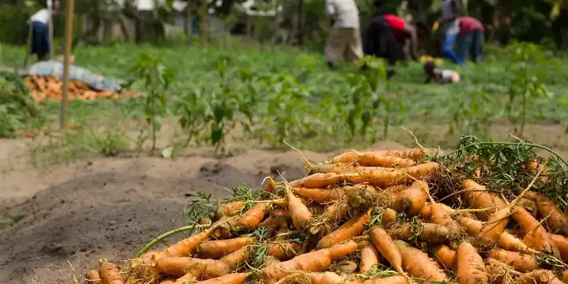
Cómo cultivar zanahoria y otras hortalizas de raíz Las raíces están entre los cultivos más fáciles de cultivar y entre los más fáciles de hacer un poco mal. Aquí está el suelo suelto que necesitan, por qué fertilizarlas como a las de hoja sale al revés y qué hace que una zanahoria se bifurque.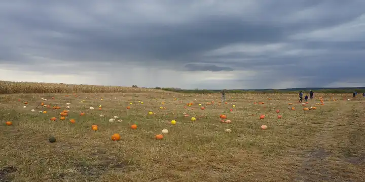
Calabaza de mata o de guía, y cuánto espacio necesita cada una Dos sobres pueden decir "calabaza" y dar plantas que necesitan cuatro veces más espacio. La palabra del sobre que indica el hábito de crecimiento es la que decide tu espaciado.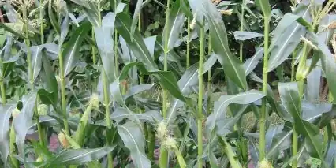
Cómo hacer un montículo de las Tres Hermanas Para qué sirve el montículo, de qué tamaño darle forma y el orden escalonado para sembrar maíz, frijol y calabaza, más el bloque exacto que necesita el maíz para polinizarse.
+17 másMostrar menos
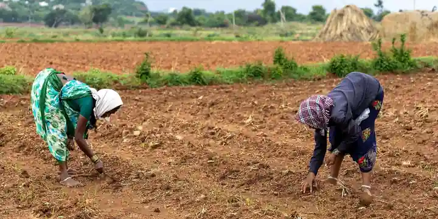
¿De verdad el frijol alimenta al maíz? El dato que más se repite sobre las Tres Hermanas, que el frijol fija nitrógeno para alimentar al maíz que tiene al lado, es verdad a medias, y la mitad falsa es justo en la que la gente confía. Esto es lo que pasa.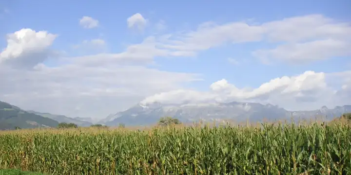
¿Qué es una milpa? El sistema más completo detrás de las Tres Hermanas Las Tres Hermanas son la versión famosa de tres cultivos; la milpa de la que vienen es todo un campo intercalado. Qué agrega la milpa, cómo se ve ya plantada y cómo cultivar un pedazo de una.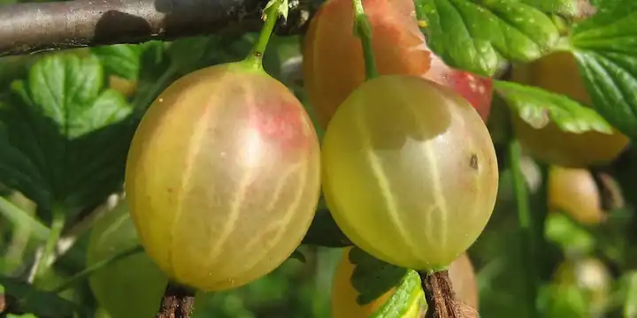
El equipo de plantas del árbol frutal, papel por papel: qué partes sostienen el diseño y cuáles son folclore El equipo de plantas de manzano de la permacultura se ve igual en todos los blogs. Una parte es real y otra no tiene nada detrás. Aquí está completo y calificado, afirmación por afirmación.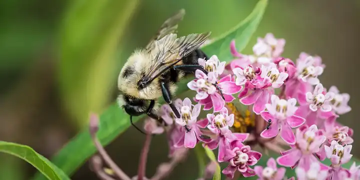
¿Por qué mi calabaza no cuaja fruta? La polinización para quien cultiva en casa Muchas flores y nada de fruta suele ser un problema de polinización. Cómo se polinizan la calabaza, el pepino, el maíz y los cultivos que necesitan pareja, y la lista corta de lo que puedes hacer.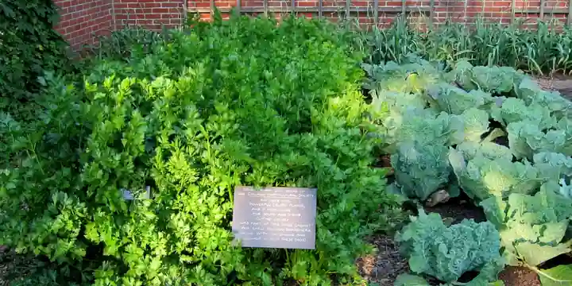
¿De verdad las plantas afectan a sus vecinas? Alelopatía, acolchado vivo y lo que respalda la evidencia Algunas plantas sí cambian el terreno para las que tienen al lado, y una puede matar tus tomates. Los efectos reales no se parecen en nada a la tabla de asociaciones.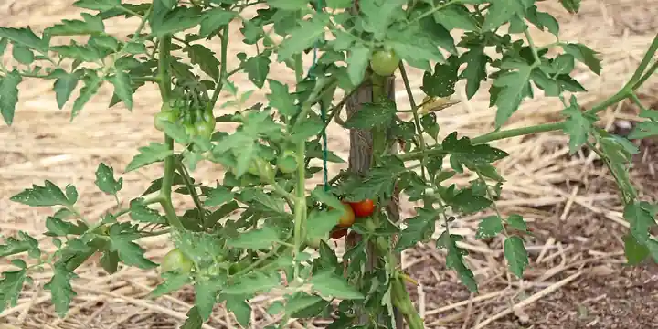
Cómo cultivar tomates, empezando por si son de mata o de guía Un tomate es determinado o indeterminado. Esa sola palabra de la etiqueta decide su espaciado, su soporte y cuándo deja de producir. Todo lo demás viene de ahí.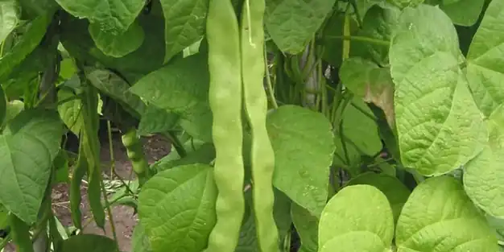
Cómo cultivar frijol: trepador o de mata, y lo que dejan las raíces El mismo frijol puede ser una mata que llega a la rodilla o una planta trepadora que sube toda la temporada, y el sobre dice cuál. Cómo cultivar los dos, y la verdad sobre el nitrógeno que todos repiten.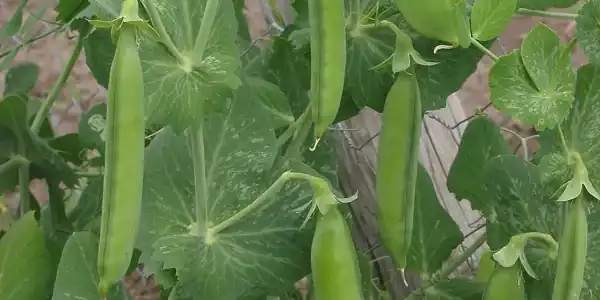
Cómo cultivar chícharo, el cultivo que se siembra antes de lo que parece sensato El chícharo castiga la espera. Se siembra semanas antes de la última helada, trepa con zarcillos y se retira en cuanto llega el verano, y eso cambia cómo planeas toda la hilera.- Cómo cultivar pepino en un enrejado El pepino crece bien en el suelo y mejor en un enrejado, con frutos más rectos en menos espacio. De guía o de mata, por qué cosechas a diario y por qué uno amargo está estresado.
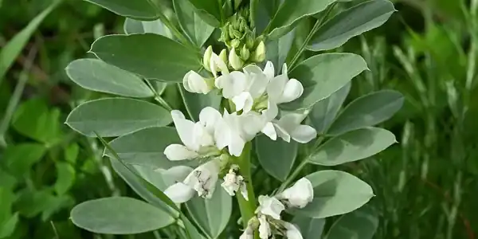
Cómo cultivar habas, una leguminosa de temporada fresca que se cultiva como el chícharo El haba (Vicia faba) es una leguminosa que se cultiva como el chícharo. Siémbrala temprano en tierra fría y termina antes de que llegue el calor fuerte del verano.- Cómo cultivar papas a partir de papas de semilla La papa (Solanum tuberosum) es una solanácea, pariente del tomate y del chile, que se cultiva a partir de trozos de tubérculo en lugar de semilla. Eso decide la mayor parte de cómo se cultiva.
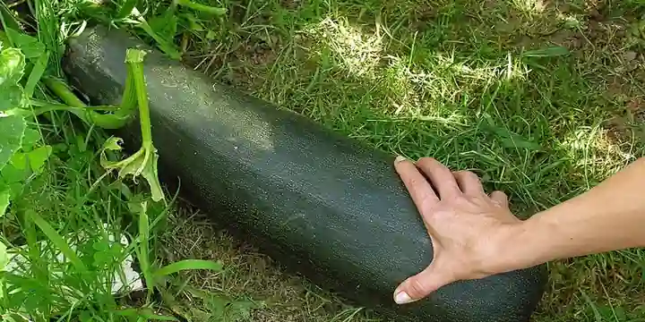
Cómo cultivar calabaza de verano, donde unas pocas plantas bastan La hortaliza que más se siembra de más en el huerto. Por qué una hilera de calabacitas entierra a una familia, qué cambia en su espacio que sea de mata o de guía, y por qué se caen las primeras flores.- Cómo cultivar uvas, empezando por el enrejado Una vid vive veinte años, necesita su enrejado puesto antes del día de plantar y pide el trabajo que la mayoría de los hortelanos se salta, que es podar de verdad.
- Cómo cultivar cebolla según la duración del día, y ajo sembrado en otoño La cebolla (Allium cepa) y el ajo (Allium sativum) son parientes cercanos con calendarios opuestos. La cebolla se planta temprano en primavera y el ajo en otoño.
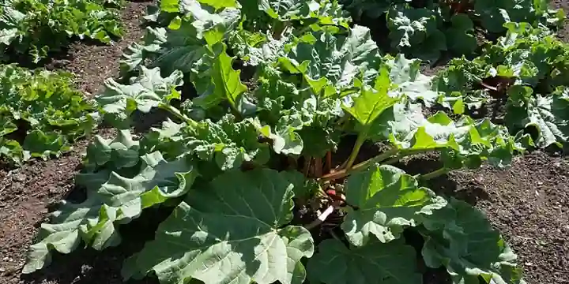
Cómo cultivar ruibarbo por sus tallos, porque las hojas son venenosas El ruibarbo es una de las perennes más fáciles de plantar, y la única hortaliza común en la que parte de la cosecha es tóxica. Qué parte, por qué, y los mitos que puedes ignorar.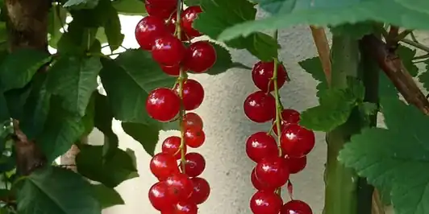
Cómo cultivar grosellas y grosellas espinosas, cuando las normas de tu zona lo permiten Una de las pocas frutas que dan cosecha en semisombra, y la única con historia legal. Qué protege esa vieja prohibición y cómo plantar sin problemas.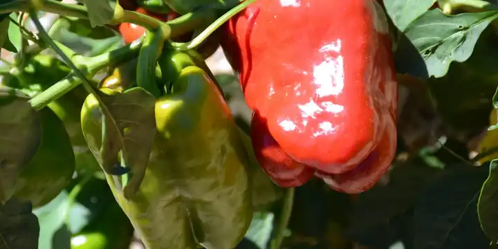
Cómo guardar semilla que salga igual a la planta madre El tomate, el chile, el frijol y el chícharo salen iguales a partir de semilla guardada. La calabaza, el maíz y las coles te van a sorprender. Cuál es cuál, y cómo limpiar, secar y guardar la semilla.
Mantenlo con vida · 12
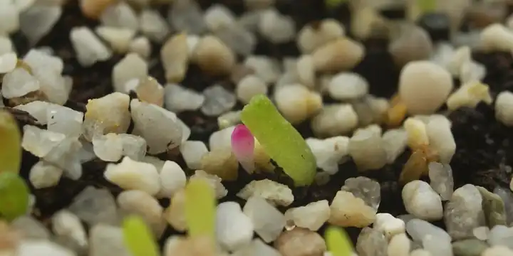
Cómo empezar semillas bajo techo Qué cultivos necesitan ventaja, cuántas semanas antes de tu última helada sembrarlos y la lista de los que conviene sembrar directo en la tierra.- Cómo hacer que las semillas broten Una semilla brota cuando se juntan unas cuantas cosas: suelo dentro de su rango de germinación, humedad constante y, para algunas semillas, una latencia rota antes o un poco de luz. Aquí está lo que pide cada tipo, y por qué.
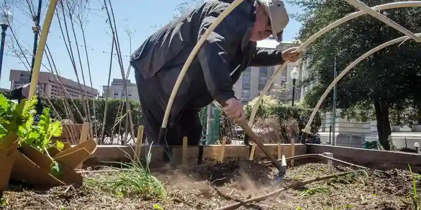
Cómo trasplantar plántulas Pasar una plántula al huerto es donde muchas se atrasan o se mueren. Cómo aclimatar, manejar y colocar un trasplante, y el único cultivo que se planta más hondo de lo que creció, y por qué.
+9 másMostrar menos
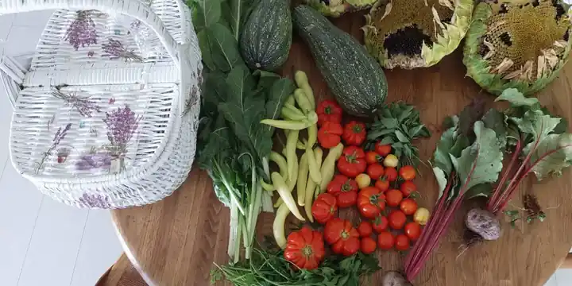
Siembra escalonada para una cosecha constante Si siembras toda tu lechuga a la vez, tienes una montaña de lechuga durante dos semanas y luego nada. La siembra escalonada, en siembras pequeñas y espaciadas, te da una cosecha constante de lo que comes todo el tiempo.- Cómo regar un huerto Cada cuánto, cuánto y cómo regar. Por qué nadie puede darte un calendario de riego, la prueba del dedo que lo reemplaza, la pulgada por semana a la que cuenta tu lluvia y los hábitos (a fondo, en la base, temprano y con acolchado) que evitan casi todos los problemas.
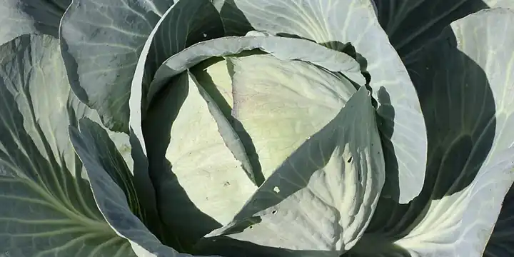
Mantas flotantes: protección contra la helada, barrera contra plagas y la única regla Una tela ligera que te gana unos grados contra la helada, mantiene las plagas fuera de forma física y calienta el suelo. Hay una regla estricta sobre cuándo tienes que quitarla, o no tendrás fruta.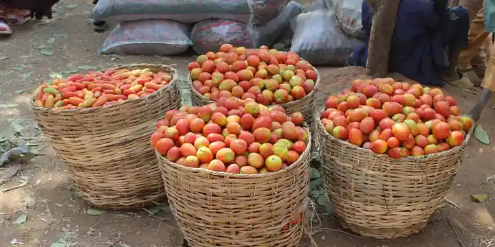
¿Por qué mis tomates no cuajan fruta? El calor, la caída de flores y el error de la malla de sombra Una tomatera cubierta de flores que se caen sin dar fruta suele estar frenada por la temperatura, y en concreto la temperatura de la noche. Por eso la malla de sombra a la que todos recurren no sirve de nada.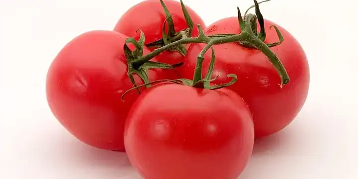
Por qué los tomates se pudren por abajo, y cómo frenar la pudrición apical La mancha negra y hundida en la parte de abajo de tus tomates no es una enfermedad y por lo general no es falta de calcio, así que las cáscaras de huevo y las sales de Epsom no sirven. Qué es y el remedio que funciona.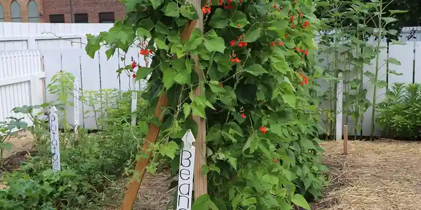
Cómo poner estacas, jaulas y enrejados a tus plantas Algunas plantas no se sostienen solas y, si se quedan en el suelo, se desparraman, se pudren y rinden poco. Qué cultivos necesitan soporte, de qué tipo y por qué se pone el mismo día que plantas.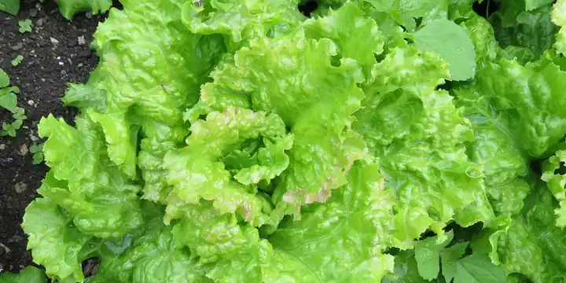
¿Qué se está comiendo mis plantas? Lee el daño antes de actuar Primero relaciona los agujeros, los rastros y los tallos cortados con el culpable, y luego usa el remedio que funciona. La mayor parte no es un rociado, y algunos daños no cuestan nada.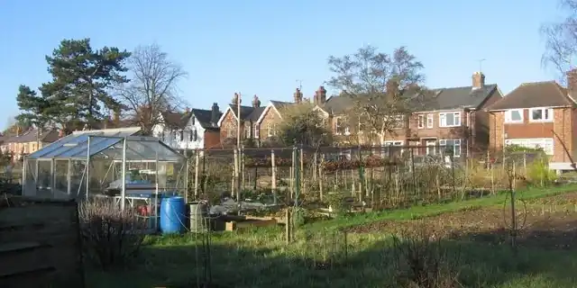
Cuándo cosechar y cómo hacer que la cosecha dure Las señales de cosecha de cada cultivo, cuáles tienen que curarse antes de guardarse, los tres tipos de despensa y lo que nunca debería ver el refrigerador.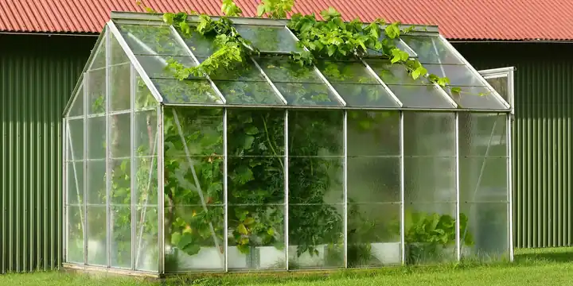
Camas frías y túneles bajos para ganarle semanas a la temporada Lo que de verdad te dan las camas frías, los túneles bajos y las mantas: los grados, las semanas y la tarea de ventilar, que lo decide todo. Y qué cultivar bajo cada uno.
Mitos · 4
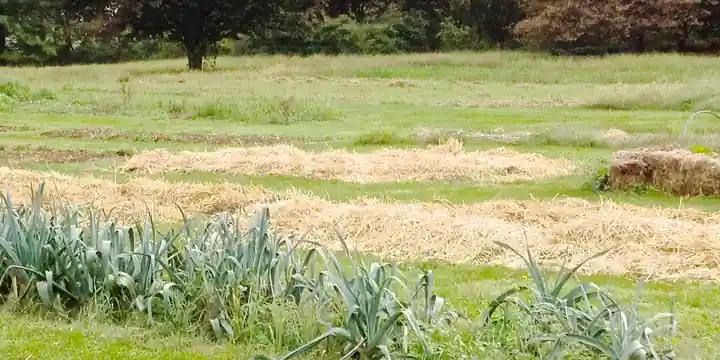
Mitos del suelo sobre arena en la arcilla, posos de café y cáscaras de plátano Los consejos de suelo más repetidos en internet son gratis, suenan sensatos y en su mayoría no hacen nada. Uno empeora tu suelo. Aquí está cada uno, y lo aburrido que sí funciona.- Lo que dice la evidencia sobre la asociación de cultivos La mayoría de las entradas de las tablas de asociación de cultivos son tradición, y pocas se pusieron a prueba alguna vez. Aquí está la lista corta de parejas que se sostienen, las famosas que no y cómo distinguir unas de otras.
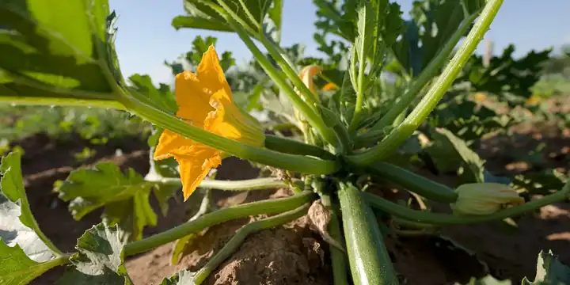
Qué remedios caseros contra plagas y malezas funcionan El jabón para trastes, el vinagre, las cáscaras de huevo y el pelo humano son los remedios gratis de la alacena. El que más a menudo se vende como la opción segura es el que daña tus plantas.- El folclore del huerto sobre sembrar según la luna, regar al mediodía y hablarles a las plantas Creencias viejas que no cuestan nada, salvo la que deja sin agua a una planta marchita en plena ola de calor. Lo que se sabe de cada una.